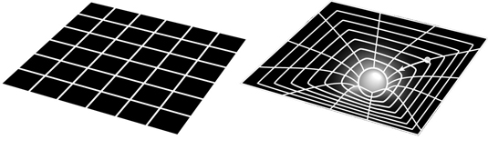

What Is Einstein's General Relativity Theory?
General relativity was Einstein's theory of gravity, published in
1915, which extended special relativity to take into account
non-inertial frames of reference — areas that are accelerating with
respect to each other. General relativity takes the form of field
equations, describing the curvature of space-time and the distribution
of matter throughout space-time. The effects of matter and space-time
on each other are what we perceive as gravity.
The theory of the space-time continuum already existed, but under
general relativity Einstein was able to describe gravity as the
bending of space-time geometry. Einstein defined a set of field
equations, which represented the way that gravity behaved in response
to matter in space-time. These field equations could be used to
represent the geometry of space-time that was at the heart of the
theory of general relativity.
As Einstein developed his general theory of relativity, he had to
refine the accepted notion of the space-time continuum into a more
precise mathematical framework. He also introduced another principle,
the principle of covariance. This principle states that the laws of
physics must take the same form in all coordinate systems.
In other words, all space-time coordinates are treated the same by the
laws of physics — in the form of Einstein's field equations. This is
similar to the relativity principle, which states that the laws of
physics are the same for all observers moving at constant speeds. In
fact, after general relativity was developed, it was clear that the
principles of special relativity were a special case.
Einstein's basic principle was that no matter where you are — Toledo, Mount Everest, Jupiter, or the Andromeda galaxy — the same laws apply. This time, though, the laws were the field equations, and your motion could very definitely impact what solutions came out of the field equations.
Applying the principle of covariance meant that the space-time
coordinates in a gravitational field had to work exactly the same way
as the space-time coordinates on a spaceship that was accelerating. If
you're accelerating through empty space (where the space-time field is
flat, as in the left picture of this figure), the geometry of
space-time would appear to curve. This meant that if there's an object
with mass generating a gravitational field, it had to curve the
space-time field as well (as shown in the right picture of the
figure).

In other words, Einstein had succeeded in explaining the Newtonian
mystery of where gravity came from! Gravity resulted from massive
objects bending space-time geometry itself.
Because space-time curved, the objects moving through space would
follow the “straightest” path along the curve, which explains the
motion of the planets. They follow a curved path around the sun
because the sun bends space-time around it.
Again, you can think of this by analogy. If you're flying by plane on
Earth, you follow a path that curves around the Earth. In fact, if you
take a flat map and draw a straight line between the start and end
points of a trip, that would not be the shortest path to follow. The
shortest path is actually the one formed by a “great circle” that
you'd get if you cut the Earth directly in half, with both points
along the outside of the cut. Traveling from New York City to northern
Australia involves flying up along southern Canada and Alaska —
nowhere close to a straight line on the flat maps we're used to.
Similarly, the planets in the solar system follow the shortest paths —
those that require the least amount of energy — and that results in
the motion we observe.
In 1911, Einstein had done enough work on general relativity to
predict how much the light should curve in this situation, which
should be visible to astronomers during an eclipse.
When he published his complete theory of general relativity in 1915,
Einstein had corrected a couple of errors and in 1919, an expedition
set out to observe the deflection of light by the sun during an
eclipse, in to the west African island of Principe. The expedition
leader was British astronomer Arthur Eddington, a strong supporter of
Einstein.
Eddington returned to England with the pictures he needed, and his
calculations showed that the deflection of light precisely matched
Einstein's predictions. General relativity had made a prediction that
matched observation.
Albert Einstein had successfully created a theory that explained the
gravitational forces of the universe and had done so by applying a
handful of basic principles. To the degree possible, the work had been
confirmed, and most of the physics world agreed with it. Almost
overnight, Einstein's name became world famous. In 1921, Einstein
traveled through the United States to a media circus that probably
wasn't matched until the Beatlemania of the 1960s.